СП 352.1325800.2017 «Здания жилые одноквартирные с деревянным каркасом. Правила»
О документе: разработчики, утверждение, регистрация, ключевые слова
1 ИСПОЛНИТЕЛЬ -Акционерное общество «Центр методологии нормирования и стандартизации в строительстве» (АО «ЦНС»)
2 ВНЕСЕН Техническим комитетом по стандартизации ТК 465 «Строительство»
3 ПОДГОТОВЛЕН к утверждению Департаментом архитектуры, строительства и градостроительной политики Министерства строительства и жилищно-коммунального хозяйства Российской Федерации (Минстрой России)
[4 УТВЕРЖДЕН приказом Министерства строительства и жилищнокоммунального хозяйства Российской Федерации (Минстрой России) от 13 декабря 2017 г. № 1660/пр и введен в действие с 14 июня 2018 г.](http://docs.cntd.ru/document/902268755)
5 ЗАРЕГИСТРИРОВАН Федеральным агентством по техническому регулированию и метрологии (Росстандарт)
В случае пересмотра (замены) или отмены настоящего свода правил соответствующее уведомление будет опубликовано в установленном порядке. Соответствующая информация, уведомление и тексты размещаются также в информационной системе общего пользования -на официальном сайте разработчика (Минстрой России) в сети Интернет
© Минстрой России, 2017
Настоящий нормативный документ не может быть полностью или частично воспроизведен, тиражирован и распространен в качестве официального издания на территории Российской Федерации без разрешения Минстроя России
Приложение Б Возможные варианты крепления инженерного оборудования в жилых зданиях с деревянным каркасом ............................................. Библиография ............................................................................................................
Дата введения 2018-06-14
УДК ОКС 91.040.30
Ключевые слова: одноквартирное жилое здание, отдельно стоящее; деревянный каркас; пожарная безопасность; безопасность при пользовании; инженерные системы; энергоэффективность; долговечность; ремонтопригодность; конструктивные решения
Введение
Настоящий свод правил разработан в развитие СП 55.13330 и СП 64.13330 с учетом требований федеральных законов от 27 декабря 2002 г. № 184-ФЗ «О техническом регулировании» [1] и от 30 декабря 2009 г. № 384-ФЗ «Технический регламент о безопасности зданий и сооружений» [2].
Работа выполнена Акционерным обществом «Центр методологии нормирования и стандартизации в строительстве» (руководитель работы А.И. Михайлов , исполнители Г.Л. Цеханский-Сергеев , В.Г. Быков , С.А. Деревянко , Т.В. Луговой , А.Г. Лебедев , А.А. Талызин , Е.И. Кемяшова ) при участии Федерального государственного бюджетного образовательного учреждения высшего образования «Петербургский государственный университет путей сообщения Императора Александра I» (ответственный исполнитель - д-р техн. наук Т.А. Белаш , исполнители - д-р архит. Ю.А. Никитин , канд. техн. наук Ж.В. Иванова , канд. техн. наук И.Б. Нудьга , канд. техн. наук Г.В. Копанский , А.В. Кузнецов ).
1Область применения
Настоящий свод правил распространяется на проектирование, строительство и реконструкцию одноквартирных жилых зданий с деревянным каркасом, отдельно стоящих, с количеством этажей не более чем три.
2Нормативные ссылки
В настоящем своде правил использованы нормативные ссылки на следующие документы:
ГОСТ 475-2016 Блоки дверные деревянные и комбинированные. Общие технические условия
ГОСТ 10632-2014 Плиты древесно-стружечные. Технические условия
ГОСТ 10950-2013 Пиломатериалы хвойных пород. Антисептическая обработка способом нанесения на поверхность
ГОСТ 11539-2014 Фанера бакелизированная. Технические условия
ГОСТ 20022.1-90 (СТ СЭВ 6829-89) Защита древесины. Термины и определения
ГОСТ 23166-99 Блоки оконные. Общие технические условия
ГОСТ 24454-80 Пиломатериалы хвойных пород. Размеры
ГОСТ 26602.2-99 Блоки оконные и дверные. Методы определения воздухои водопроницаемости
ГОСТ 27751-2014 Надежность строительных конструкций и оснований. Основные положения
ГОСТ 27772-2015 Прокат для строительных стальных конструкций. Общие технические условия
\_\_\_\_\_\_\_\_\_\_\_\_\_\_\_\_\_\_\_\_\_\_\_\_\_\_\_\_\_\_\_\_\_\_\_\_\_\_\_\_\_\_\_\_\_\_\_\_\_\_\_\_\_\_\_\_\_\_\_\_\_\_\_\_\_\_\_\_\_\_\_\_
ЗДАНИЯ ЖИЛЫЕ ОДНОКВАРТИРНЫЕ С ДЕРЕВЯННЫМ КАРКАСОМ Правила проектирования и строительства Single-family houses with wooden frame. Rules of design and
construction
\_\_\_\_\_\_\_\_\_\_\_\_\_\_\_\_\_\_\_\_\_\_\_\_\_\_\_\_\_\_\_\_\_\_\_\_\_\_\_\_\_\_\_\_\_\_\_\_\_\_\_\_\_\_\_\_\_\_\_\_\_\_\_\_\_\_\_\_\_\_\_\_
ГОСТ 30403-2012 Конструкции строительные. Метод испытания на пожарную опасность
ГОСТ 30494-2011 Здания жилые и общественные. Параметры микроклимата в помещениях
ГОСТ 30547-97 Материалы рулонные кровельные и гидроизоляционные. Общие технические условия
ГОСТ 31167-2009 Здания и сооружения. Методы определения воздухопроницаемости ограждающих конструкций в натурных условиях
ГОСТ Р 53292-2009 Огнезащитные составы и вещества для древесины и материалов на ее основе. Общие требования. Методы испытаний
СП 1.13130.2009 Системы противопожарной защиты. Эвакуационные пути и выходы (с изменением № 1)
СП 2.13130.2012 Системы противопожарной защиты. Обеспечение огнестойкости объектов защиты (с изменением № 1)
СП 14.13330.2014 «СНиП II-7-81* Строительство в сейсмических районах» (с изменением № 1)
СП 17.13330.2017 «СНиП II-26-76 Кровли»
СП 20.13330.2016 «СНиП 2.01.07-85* Нагрузки и воздействия»
СП 21.13330.2012 «СНиП 2.01.09-91 Здания и сооружения на подрабатываемых территориях и просадочных грунтах» (с изменением № 1)
СП 22.13330.2016 «СНиП 2.02.01-83* Основания зданий и сооружений»
СП 25.13330.2012 «СНиП 2.02.04-88 Основания и фундаменты на вечномерзлых грунтах» (с изменением № 1)
СП 28.13330.2017 «СНиП 2.03.11-85 Защита строительных конструкций от коррозии»
СП 42.13330.2016 «СНиП 2.07.01-89* Градостроительство. Планировка и застройка городских и сельских поселений»
СП 48.13330.2011 «СНиП 12-01-2004 Организация строительства» (с изменением № 1)
СП 50.13330.2012 «СНиП 23-02-2003 Тепловая защита зданий»
СП 54.13330.2016 «СНиП 31-01-2003 Здания жилые многоквартирные»
СП 55.13330.2016 «СНиП 31-02-2001 Дома жилые одноквартирные»
СП 63.13330.2012 «СНиП 52-01-2003 Бетонные и железобетонные конструкции. Основные положения» (с изменениями № 1, № 2, № 3)
СП 64.13330.2017 «СНиП II-25-80 Деревянные конструкции» (с изменением № 1) СП 70.13330.2012 «СНиП 3.03.01-87 Несущие и ограждающие конструкции» (с изменениями № 1, № 3)
СП 131.13330.2012 «СНиП 23-01-99* Строительная климатология» (с изменениями № 1, № 2)
СП 137.13330.2012 Жилая среда с планировочными элементами, доступными инвалидам. Правила проектирования (с изменением № 1)
Примечание - При пользовании настоящим сводом правил целесообразно проверить действие ссылочных документов в информационной системе общего пользования - на официальном сайте федерального органа исполнительной власти в сфере стандартизации в сети Интернет или по ежегодному информационному указателю «Национальные стандарты», который опубликован по состоянию на 1 января текущего года, и по выпускам ежемесячного информационного указателя «Национальные стандарты» за текущий год. Если заменен ссылочный документ, на который дана недатированная ссылка, то рекомендуется использовать действующую версию этого документа с учетом всех внесенных в данную версию изменений. Если заменен ссылочный документ, на который дана датированная ссылка, то рекомендуется использовать версию этого документа с указанным выше годом утверждения (принятия). Если после утверждения настоящего свода правил в ссылочный документ, на который дана датированная ссылка, внесено изменение, затрагивающее положение, на которое дана ссылка, то это положение рекомендуется применять без учета данного изменения. Если ссылочный документ отменен без замены, то положение, в котором дана ссылка на него, рекомендуется применять в части, не затрагивающей эту ссылку. Сведения о действии сводов правил целесообразно проверить в Федеральном информационном фонде стандартов.
3Термины и определения
В настоящем своде правил применены термины по СП 55.13330, а также следующий термин с соответствующим определением:
- 3.1деревянный каркас
- Строительная система, состоящая из деревянных вертикальных стоек, нижней и верхней обвязки, системы связей (горизонтальных и вертикальных), элементов перекрытия и покрытия (крыши). Примечание - Заполнение каркаса выполняется из различных тепло-, паро- и гидроизоляционных материалов. Каркас обшивают с наружной и внутренней сторон отделочным материалом.
4Основные положения
СП 352.1325800.2017 оборудования определяются застройщиком (заказчиком) с учетом требований СП 55.13330.
5Общие требования по обеспечению несущей способности и деформативности конструкций
- разрушения как отдельных несущих конструкций элементов каркаса или их частей, так и всего здания или его частей;
- ухудшения эксплуатационных свойств конструкций каркаса вследствие деформаций или образования трещин, повреждения части здания, сетей инженерно-технического обеспечения в результате деформаций, перемещений либо потери устойчивости несущих конструкций, в том числе отклонений от вертикали.
Нормативные значения нагрузок, которые учитывают неблагоприятные сочетания нагрузок или соответствующих им усилий, предельные значения прогибов и перемещений конструкций, а также значения коэффициентов надежности по нагрузке должны быть приняты в соответствии с требованиями СП 20.13330 и пункта 6.4 СП 55.13330.2016.
5.5.При формировании расчетных моделей одноквартирных жилых зданий с деревянным каркасом и их узловых соединений требуется учитывать действительные условия работы здания с учетом рассматриваемой расчетной ситуации (взаимодействие деревянных конструкций между собой и с фундаментами, грунтовым основанием, пространственная работа конструкций, геометрическая и физическая нелинейность, возможность образования трещин и т. п.).
6Пожарная безопасность
Применяемые средства огнезащиты для древесины должны иметь документы, подтверждающие качество огнезащитного состава. В качестве средств огнезащиты требуется применять огнезащитные лаки, краски, пасты, обмазки, пропиточные и комбинированные составы. При этом необходимо учитывать условия эксплуатации здания в соответствии с требованиями ГОСТ Р 53292.
Эффективность средств огнезащиты оценивают по ГОСТ Р 53292. Пределы огнестойкости строительных конструкций с огнезащитой и их класс пожарной опасности устанавливают в соответствии с требованиями СП 2.13130.
СП 352.1325800.2017 материалы должны удовлетворять требованиям распространяющихся на них стандартов или технических условий (в отсутствие стандартов), а материалы зарубежного производства - техническим свидетельствам и требованиям [6]. Материалы должны иметь сопутствующую документацию, включая документы, подтверждающие соответствие, разрешительные документы по [10] для материалов, включенных в Единый перечень продукции (товаров), подлежащей государственному санитарно-эпидемиологическому надзору (контролю) [11], сертификаты пожарной безопасности (для продукции, подлежащей обязательной сертификации в области пожарной безопасности Российской Федерации в соответствии с [3] и [5]), инструкции по применению.
При этом предел огнестойкости узлов крепления деревянного каркаса и примыкания строительных конструкций между собой должен быть не ниже минимального требуемого предела огнестойкости стыкуемых строительных конструкций.
7Безопасность при пользовании
8Обеспечение санитарно-эпидемиологических требований
При проектировании и строительстве одноквартирных жилых зданий с деревянным каркасом должны быть предусмотрены меры, обеспечивающие выполнение санитарно-эпидемиологических и экологических требований по охране здоровья и окружающей природной среды в соответствии с СП 55.13330.
9Энергосбережение
С учетом эффективного расходования энергетических ресурсов при эксплуатации одноквартирного жилого здания с деревянным каркасом требования к внутреннему микроклимату помещений устанавливают по СП 55.13330.
10Долговечность, строительство и ремонтопригодность
СП 352.1325800.2017
11Конструктивные решения одноквартирных жилых зданий с деревянным каркасом
11.1Общие требования к используемым материалам
11.2Фундаменты, стены подвалов, полы по грунту
Облицовочную кирпичную кладку следует крепить к стене подвала металлическими стяжками, располагаемыми с шагом не более 200 мм по вертикали и не более 900 мм по горизонтали. Зазор между стеной подвала и облицовкой должен быть заполнен строительным раствором.
К деревянному каркасу стены облицовочную кирпичную кладку следует крепить металлическими анкерами.
Если наружные стены первого этажа имеют отделку деревянной обшивкой или штукатуркой по деревянной обрешетке, расстояние от низа обшивки (штукатурки) до уровня планировочной отметки земли должно составлять не менее 250 мм.
11.3Перекрытия
Балки и прогоны разделяют внутреннее пространство перекрытия на замкнутые ячейки и выполняют функции противопожарных диафрагм.
11.4Стены и перегородки
На каркас перегородок нагрузки от перекрытий и крыши не передаются.
Выделяют следующие типы деревянного каркаса:
- с неразрезными (сквозными) стойками;
- составными (поэтажными) стойками.
В случае если каркас стен выполнен с составными (поэтажными) стойками, они в пределах каждого этажа опираются на нижние обвязки каркаса стен. При этом на верхние обвязки нагрузка передается через элементы каркаса перекрытия.
В каркасе с неразрезными (сквозными) стойками сами стойки опираются на нижние и верхние обвязки, а для устройства каркаса перекрытия используют прогоны, врезанные вертикально в стойки каркаса стен.
11.5Крыша
- сверху - сплошной кровельный настил или обрешетка, на котором(й) располагается кровля, обеспечивающая необходимую защиту от проникновения атмосферных осадков и талой воды;
- снизу - подшивка потолка, над которой располагаются пароизоляционный слой и утеплитель, обеспечивающий необходимую теплоизоляцию.
11.6Теплоизоляция, защита от паро- и воздухопроницания
СП 352.1325800.2017 конструкций, необходимо предусмотреть их защиту от влаги и циркуляции воздуха, требования к которой приведены в [8].
- кровельные и гидроизоляционные рулонные материалы;
- гипсокартонные и гипсоволокнистые листы толщиной не менее 12,5 мм;
- фанера толщиной не менее 8 мм;
- жесткие древесно-волокнистые плиты толщиной не менее 6 мм;
- экструдированый полистирол толщиной не менее 40 мм;
- уретановая теплоизоляция с подложкой из фольги толщиной не менее 25 мм;
- алюминиевая фольга;
- полиэтиленовая пленка толщиной не менее 0,15 мм.
- наружной защитной обшивки стенового каркаса;
- водовоздухозащитного слоя;
- облицовочного слоя или наружной штукатурки.
11.7Отделка фасадных поверхностей наружных стен
- 11.7.2. Конструкция наружной отделки (облицовки) наружных стен (рисунок А.11) одноквартирного жилого здания с деревянным каркасом включает:
- наружную защитную обшивку каркаса стены и водовоздухозащитный слой;
- отделочные (облицовочные) слои;
- стыки элементов наружных стен;
- устройства по отводу проникшей за облицовку атмосферной влаги и воздушные прослойки, необходимые для обеспечения защиты деревянных элементов конструкции и утеплителей от намокания.
11.8Окна и двери
11.9Лестницы, пандусы, ограждения
11.10Системы инженерного оборудования
Трубы и вентиляционные короба необходимо прокладывать под балками или между элементами деревянного каркаса (рисунок Б.1).
Расстояние от задней и боковых стенок печи или камина до деревянного каркаса наружной или внутренней стены должно быть не менее 100 мм, расстояние от стенок дымосборника до деревянного каркаса - не менее 50 мм (рисунок Б.2).
Расстояние от дымовой трубы до строительных конструкций из горючих материалов (см. [8, раздел 13]) должно быть не менее 50 мм (рисунок Б.3).
АПриложение А. Возможные варианты конструктивного исполнения элементов деревянного
каркаса жилого здания и узловых соединений
1 - балка перекрытия; 2 - обвязочная балка; 3 - верхняя обвязка стенового каркаса (нижний этаж); 4 - нижняя обвязка стенового каркаса; 5 - стойка стенового каркаса; 6 - черный пол
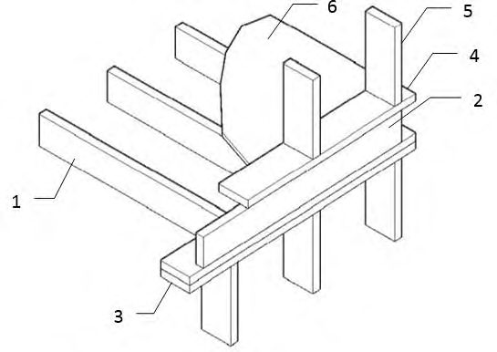
Рисунок А.1 - Опирание балок перекрытия на каркас наружной стены
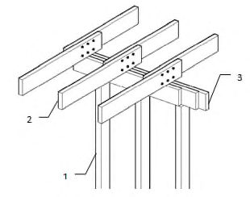
1 - стойка каркаса; 2 - балка перекрытия; 3 - деревянный прогон
Рисунок А.2 - Опирание балок перекрытия на деревянный прогон
1 - диагональный раскос, обеспечивающий необходимую жесткость каркаса; 2 - наружная обшивка, обеспечивающая постоянную связь жесткости; 3 - внутренняя обшивка, обеспечивающая постоянную связь жесткости; 4 - нижняя обвязка;
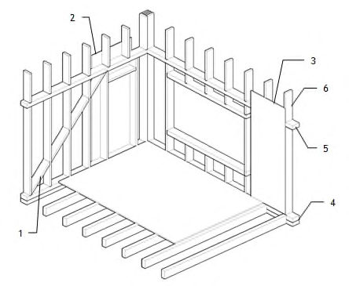
5 - верхняя обвязка; 6 - стойка каркаса
Рисунок А.3 - Каркас стены
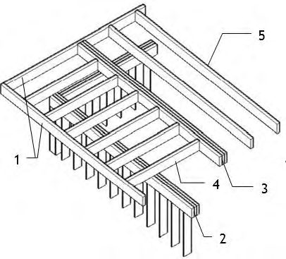
1 - обвязка консольных и кровельных балок; 2 - обвязка наружной стены;
- 3 - сдвоенная кровельная балка; 4 - консольная балка; 5 - кровельная балка
Рисунок А.4 - Вариант устройства несущего каркаса плоской крыши
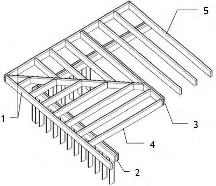
1 - каркас наружной стены; 2 - опорная стенка; 3 - балка чердачного перекрытия, соединенная внахлест над внутренней несущей стеной; 4 - каркас внутренней несущей стены; 5 - стойки с шагом 1,2 м; 6 - коньковый прогон; 7 - подстропильный брус;
8 - стропила
Рисунок А.5 - Устройство каркаса скатной крыши с промежуточной опорой в виде опорной стенки
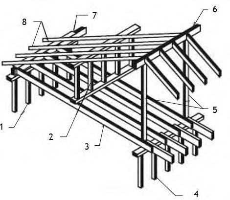
1 - каркас наружной стенки; 2 - обшивка наружной стены; 3 - балка чердачного перекрытия, опирающаяся на сдвоенную обвязку; 4 - каркас внутренней несущей стены; 5 - стропила, опирающиеся на верхнюю обвязку опорной стенки; 6 - накладка; - опорная стенка для стропил на несущей стене;
7 - подкосы; 8 - коньковый прогон; 9 10 - подстропильный брус
Рисунок А.6 - Устройство каркаса скатной крыши при смещенной внутрь жилого здания наружной стене
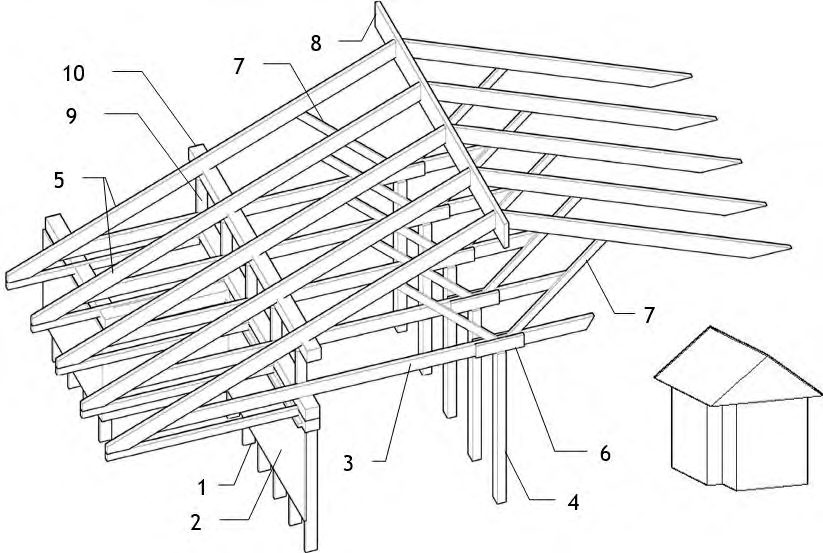
- а - вынос карниза не более 300 мм; б горизонтальная; в - вынос карниза более 300 мм, подшивка карниза наклонная
- 1 - балка чердачного перекрытия; 2 - лицевая карнизная доска; 3 - доска обвязки стропил; 4 доска подшивки карниза; 5 - вентиляционные продухи в материале подшивки карниза; 6 -стропила вынос карниза более 300 мм, подшивка карниза -
Рисунок А.7 - Устройство карниза скатной крыши
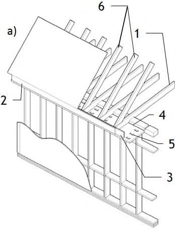
а - утеплитель между стойками каркаса стен; б - утеплитель между стойками каркаса стены с дополнительным слоем жесткого утеплителя снаружи
1 - внутренняя обшивка каркаса (гипсокартонные или гипсоволокнистые листы);
2 - теплоизоляционный материал; 3 - стойки каркаса; 4 - пароизоляционный слой;
5 - водовоздухозащитный слой; 6 - наружная защитная обшивка стены древесноволокнистыми плитами; 7 - облицовка из деревянных досок ( а ) или стальных профилированных полос ( б ), прикрепляемых через утеплитель к стойкам каркаса
Рисунок А.8 - Варианты размещения теплоизоляции в каркасной стене а - перекрытие над неотапливаемым помещением, утепленное матами «враспор»; б - перекрытие над неотапливаемым подпольем, утепленное насыпным утеплителем 1 - обшивка (металлическая сетка, фиброцементные плиты и др.); 2 - балки перекрытия; 3 -теплоизоляционный материал; 4 - черный пол из фанеры;
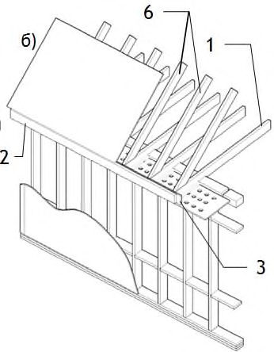
5 - чистый пол
Рисунок А.9 - Утепление перекрытий над неотапливаемыми помещениями
1 - угловая стойка; 2 - нижняя обвязка каркаса стены; 3 - стойки каркаса стены; 4 - утеплитель между балками перекрытия; 5 - обвязочная балка перекрытия; 6 - балка перекрытия; 7 - утеплитель вдоль крайней балки перекрытия; 8 - черный пол; 9 изоляционный материал; 10 - чистый пол
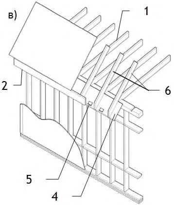
Рисунок А.10 - Укладка утеплителя в местах расположения ниже обвязочных и крайних балок перекрытия
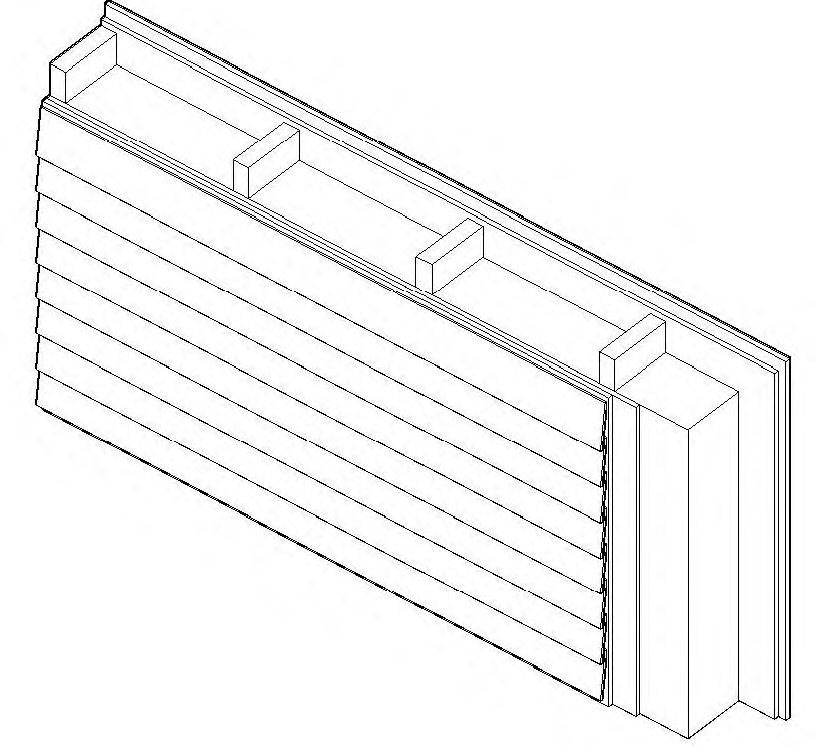
1 - отлив; 2 - фартук*; 3 - водовоздухозащитный слой
\_\_\_\_\_\_\_\_\_\_\_\_\_\_\_\_\_
* Не менее чем на 50 мм заводится за водовоздухозащитный слой.
Рисунок А.11 - Пример устройства водоотводящего фартука над оконным (дверным) проемом
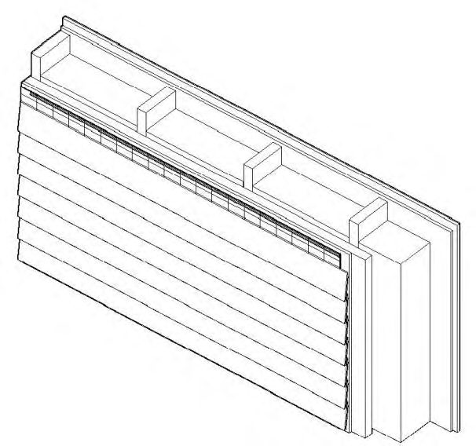
1 - нижняя обвязочная балка; 2 - стойка каркаса; 3 - верхний несущий ригель дверного проема; 4 - верхняя обвязочная балка; 5 - схватка; 6 - стропильная нога;
7 - верхний несущий ригель оконного проема; 8 - нижний несущий ригель оконного проема; 9 - укороченная стойка; 10 - дополнительная стойка каркаса
Рисунок А.12 - Схема устройства оконного и дверного проемов в жилых зданиях с деревянным каркасом
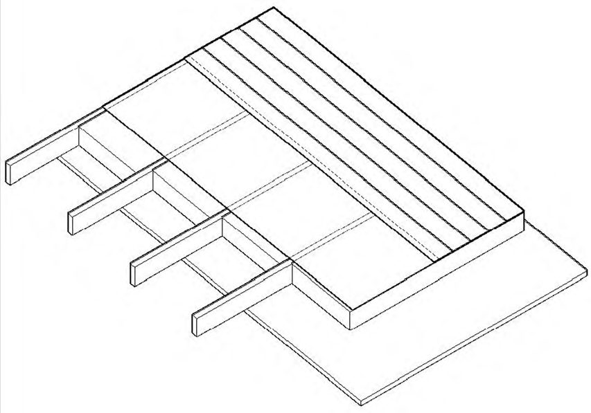
1 - сдвоенная балка-перемычка, обеспечивающая противопожарную преграду
Рисунок А.13 - Устройство противопожарной преграды в лестничном проеме
БПриложение Б. Возможные варианты крепления инженерного оборудования в жилых зданиях с деревянным каркасом
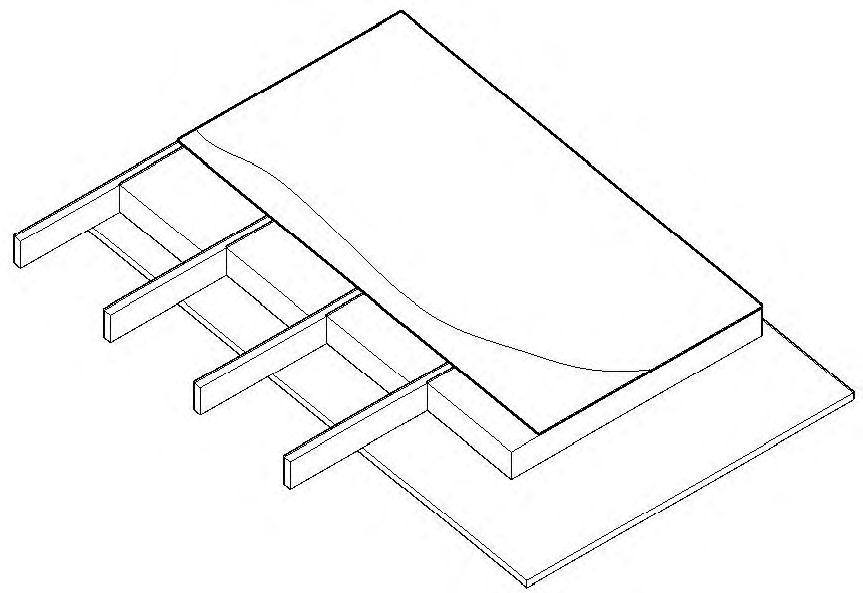
1 - подвески; 2 - нагнетательный короб; 3 - балки перекрытия; 4 - подсоединение короба; 5 -расширение короба; 6 - воздушный поток; 7 - отопительная установка; 8 - отводящая труба к дымовой трубе; 9 - воздуховод - металлический короб, уложенный между балками перекрытия; 10 -решетка рециркуляционного воздуха; 11 - электрическая проводка от контрольного реле к термостату, установленному на стене на высоте 1,2 м над полом первого этажа; 12 - электрическая проводка от отопительной установки к выключателю, устанавливаемому в соответствии с проектными решениями
Рисунок Б.1 - Крепление воздуховодов
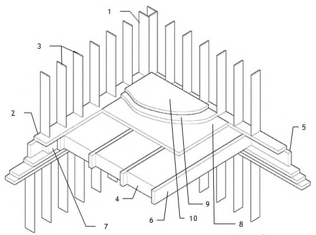
1 - расстояние от деревянного горючего каркаса до дымохода; 2 - расстояние от деревянного горючего каркаса до стенки печи или камина
Рисунок Б.2 - Расстояние от стенок камина до каркаса здания
1 - настил пола; 2 - негорючее уплотнение (например, листовой металл); 3 - дымовая труба из жаростойких материалов; 4 - расстояние до горючего деревянного каркаса от дымовых труб*
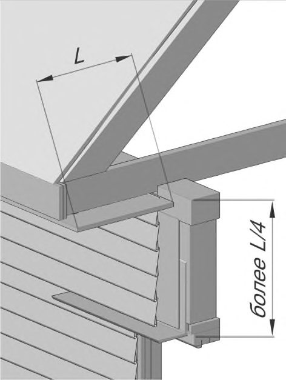
\_\_\_\_\_\_\_\_\_\_\_\_\_\_\_\_\_\_\_\_\_
* Должно составлять не менее 50 мм.
Рисунок Б.3 - Расстояние от дымовой трубы до строительных конструкций
СП 352.1325800.2017
Библиография
- [1] Федеральный закон от 30 декабря 2002 г. № 184-ФЗ «О техническом регулировании»
- [2] Федеральный закон от 30 декабря 2009 г. № 384-ФЗ «Технический регламент о безопасности зданий и сооружений»
- [3] Федеральный закон от 22 июля 2008 г. № 123-ФЗ «Технический регламент о требованиях пожарной безопасности»
- [4] Федеральный закон от 29 декабря 2004 г. № 190-ФЗ «Градостроительный кодекс Российской Федерации»
- [5] Постановление Правительства Российской Федерации от 17 марта 2009 г. № 241 «Об утверждении списка продукции, которая для помещения под таможенные режимы, предусматривающие возможность отчуждения или использования этой продукции в соответствии с ее назначением на территории Российской Федерации, подлежит обязательному подтверждению соответствия требованиям Федерального закона «Технический регламент о требованиях пожарной безопасности»
- [6] Постановление Государственного комитета Российской Федерации по строительству и жилищно-коммунальному комплексу от 1 июля 2002 г. № 76 «О порядке подтверждения пригодности новых материалов, изделий, конструкций и технологий для применения в строительстве»
- [7] ВСН 58-88(р) Положение об организации и проведении реконструкции, ремонта и технического обслуживания зданий, объектов коммунального и социально-культурного назначения
- [8] СП 31-105-2002 Проектирование и строительство энергоэффективных одноквартирных жилых домов с деревянным каркасом
- [9] СП 31-106-2002 Проектирование и строительство инженерных систем одноквартирных жилых домов
- [10] Единая форма документа, подтверждающего безопасность продукции (товаров) (Единая форма свидетельства о государственной регистрации), утвержденная Решением Комиссии Таможенного союза от 28 мая 2010 г. № 299 «О применении санитарных мер в Евразийском экономическом союзе»
- [11] Единый перечень продукции (товаров), подлежащей государственному санитарно-эпидемиологическому надзору (контролю) на таможенной границе и таможенной территории Евразийского экономического союза, утвержденный Решением Комиссии Таможенного союза от 28 мая 2010 г. № 299 «О применении санитарных мер в Евразийском экономическом союзе»